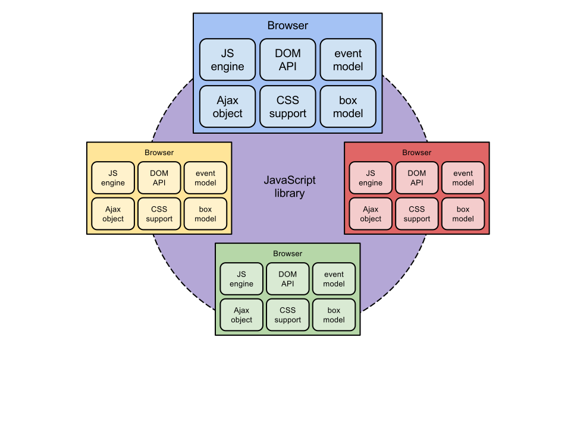

Do you really
By Craig Buckler
@craigbuckler craigbuckler.com SitePoint.com
Hello! My name's Craig Buckler and I'm a freelance web consultant from Devon.
I'm a full-stack developer I primarily concentrate on front-end work as well as:
writing for SitePoint
creating training videos
talking at conferences
prostituting myself to whoever wants me
You can find me on the usual websites, social networks and GitHub with the imaginative ID 'craigbuckler'.
My name's fairly distinct so you shouldn't have too much trouble.
Question…
Do you use jQuery?
Do you use jQuery in every project?
First, I'd like some idea how many of you use jQuery.
So hands up all developers who do some amount of front-end work.
Keep your hand up if you use jQuery?
{NEXT} Keep your hand up if you use jQuery in every project.
Ooo, this could be a tough crowd.
We'll discuss…
what jQuery is
why it became popular
whether you need it in your next project
But we won't
bash jQuery
It's trendy to moan about jQuery but I want to be clear that I still love the library and there are situations when it can be very useful.
in fact, I love it so much...
Shameless plug
tinyurl.com/jquery-course
that I even created a jQuery video course which is available from all good online training stores
and probably some bad stores too
What is jQuery?
a library written in JavaScript…
…to help browser-based JavaScript development
jQuery is not…
It's not
A language in it's own right. jQuery syntax is JavaScript syntax. It has a slightly different approach in some respects but it's still JavaScript below the surface.
Essential. jQuery like any JavaScript language or framework may help you write code but that functionality can still be implemented without jQuery should you choose to do so.
Why we use jQuery?
In 2006:
client-side heavy applications were new
but development was tough
browsers were buggy and inconsistent
for many, JavaScript was new and strange
So let's look at the history of jQuery.
In 2006, developers had a renewed interest in client-side browser applications. Ajax techniques were increasingly popular and were being used by applications such as GMail and Google Maps.
Browsers were starting to offer desktop-like functionality and speed
{NEXT} But behind the scenes, browsers were a hostile environment.
Microsoft had abandoned Internet Explorer which was still the most-used application. There were very few tools and the best you could hope for was cryptic messages like this.
{NEXT} we had a couple of competing browsers such as Firefox and Opera, but these adopted W3C standards which weren't necessarily compatible with IE
{NEXT} and to many developers coming from backend or desktop languages, JavaScript seemed very weird and difficult
JavaScript libraries

Now don't forget it's not just a handful of desktop browsers developers are trying to support. The iPhone arrived in 2007 and Android appeared soon after. Each has different browsers, different APIs and different bugs.
So soon, developers were creating functions which helped get around the browser differences in language support, the document object model, event objects, XMLHttpRequest and more.
These functions were then wrapped into into libraries which offered a more consistent development platform. We soon saw the rise of projects such as Prototype, MooTools and YUI.
The rise of jQuery
// a single object for everything
$;// CSS selector syntax
$("#main-section p.name");// concise method chaining
$("#main-section p.name").text("hello").addClass("new").slideDown();
jQuery arrived quite late to the party but John Resig - it's developer - learned from the other JavaScript libraries which had started to become increasingly large and cumbersome. He devised a number of elegant features.
jQuery offered a single object - the dollar sign. It was simple.
{NEXT} next, you could select DOM nodes using CSS selectors. This may seem quite obvious now but it was revolutionary at the time.
{NEXT} and it also offered method chaining. Most jQuery method return the jQuery object itself which means it can be passed into another method.
So here we're selecting a number of HTML elements, setting the text to "Hello", adding a class, and running a slideDown animation. It's concise and very readable.
This made jQuery phenominally successful. Even web development job vacancies started requesting jQuery skills over and above JavaScript itself.
jQuery usage in 2014
How many websites use jQuery now?
top million websites 59.1% top 10,000 websites 77.2% proportion of usage 94.3%
sources: BuiltWith.com and w3techs.com
How successful?
If we take the top 1 million websites according to traffic volumes, how many do you think use jQuery?
{NEXT} it's almost 60 percent
{NEXT} so what about the top 10,000 websites? Any guesses?
{NEXT} it rises to almost 80%
{NEXT} finally, what if we look at all sites and find those using some type of JavaScript library. What proportion of those use jQuery? Anyone?
{NEXT} it's 94.3 percent. jQuery wins. Everyone else might as well give up.
jQuery:
the good parts the bad parts CSS selectors CSS selectors method chaining method chaining cross-browser support cross-browser support shallow learning curve shallow learning curve great documentation great documentation covers core APIs covers core APIs
So let's look at the good parts of jQuery.
{NEXT} selecting DOM nodes using CSS selectors was inspired. jQuery's Sizzle selector engine is generally more advanced than that offered by the browser vendors.
{NEXT} method chaining offers a consistent and easy to read API
{NEXT} you rarely worry about cross-browser support - jQuery works everywhere
{NEXT} most people can string a few methods together and do something useful
{NEXT} the online documentation is great and you'll find answers everywhere
{NEXT} it covers the core browser APIs: dom traversal, node manipulation, event handling, Ajax and animation
The Web in 2014
IE6 and IE7 are dead!
IE8 is dying rapidly
IE has (mostly) caught up
all vendors have adopted HTML5 standards
the top browsers are closer than ever…
…even on mobile
vendors are copying useful jQuery functions
but the web has changed a lot since jQuery arrived in 2006.
{NEXT} first, IE6 and 7 are rarely a problem any longer
{NEXT} unless you're unlucky, IE8 usage has dropped below 1 in 20 users for most sites and the browser is rarely problematic compared to its predecessors
You should also be aware that jQuery 2 has dropped support for IE8 and below.
{NEXT} you may not believe me but IE11 is a good browser. It's fast and won't give you any more problems than any other browser. IE9 and 10 are fine too; they're just missing support for lesser-used APIs
{NEXT} all the vendors are working together to ensure compatibility. It doesn't always work but...
{NEXT} the top applications are close than they've ever been
{NEXT} and that includes mobile devices which now offer very capable browsers
{NEXT} and finally, the vendors understand the popularity of jQuery and have started to add similar useful APIs
jQuery:
the good parts the bad parts CSS selectors CSS selectors method chaining method chaining cross-browser support cross-browser support shallow learning curve shallow learning curve great documentation great documentation covers core APIs covers core APIs
So the problems jQuery solved for us 8 years ago don't necessarily exist today. Let's look at the bad parts...
{NEXT} browser vendors have implemented a methods named querySelector and querySelectorAll which fetch nodes using CSS selectors. It's even supported in IE8. So it's a native implementation and jQuery will use it if it's available. But that can mean jQuery adds an unncecessary overhead.
{NEXT} chaining looks cool until you realise that almost every method in that chain is looping through every node. That can be inefficient since a single loop could do the same work.
{NEXT} first, jQuery doesn't support every browser. If you come up against a problem with a specific device, it's incredibly difficult to fix jQuery - you have to report a bug and hope the team will take it seriously.
Next problem ... and I think you can see where I'm going with this!
{NEXT} the shallow learning curve allows you do things which are specatularly inefficient but they work. But jQuery hides much of the implementation from you so it's not always obvious something is wrong.
{NEXT} jQuery's documentation is ubiquitous. If you ask a question about a specific JavaScript issue on StackOverflow, 99 times out of 100 you'll get the answer "seriously dude, just use jQuery". That's not necessarily useful.
{NEXT} finally, jQuery covers the core APIs only. These are all consistent in modern browsers so we don't need so much assistance. But there are dozens of other advanced HTML5 APIs jQuery doesn't help you with.
If you're totally reliant on jQuery, you may struggle to use a new API because your crutch has been kicked away.
jQuery Misconceptions
jQuery is perfect
write less, do more
jQuery is only 30Kb
jQuery is a high-level language
learning JavaScript isn't necessary
Are we using jQuery out of habit rather than necessity?
Because jQuery has been so useful it's led to several misconceptions about it and JavaScript in general.
{NEXT} jQuery is not perfect - it has bugs and issues like any other project. It is generally robust, but fully depending on it isn't necessarily wise.
{NEXT} this is jQuery's catchphrase but it's not necessarily true these days. If you're doing something reasonabily complex, jQuery won't always mean less code.
{NEXT} minified and gzipped jQuery is only 32K. That's nothing when compared with an image.
But it's important to realise the actual source is nearer 300K and it has a processing overhead. You're unlikely to be using more than a fraction of jQuery's functionality yet all that code is referenced in every object you create.
{NEXT} I've heard this a few times. JavaScript is considered to be some sort of low-level assembly language which jQuery somehow makes usable. It's nonsense; jQuery is written in JavaScript and covers a very small subset of functionality.
{NEXT} finally, the classic: "learning JavaScript isn't necessary because jQuery exists".
It's strange that many web developers actively avoid learning JavaScript. But remember, jQuery won't always help you leverage new HTML5 APIs. Nor will it help write programs in other environments.
And don't forget that jQuery may not be around forever. Ask any YUI developer...
{NEXT} So are we using jQuery - or indeed any JavaScript library - out of habit rather than necessity? I've certainly been guilty of that.
Raw JavaScript
has become considerably easier
has become cool (again)
it's considerably faster
So let's look at the benefits of raw JavaScript.
{NEXT} the core browser APIs are consistent and oldIEs have mostly died so it's far easier than it used to be.
{NEXT} everyone's jumping on the JavaScript bandwagon. It's can be used in places outside the browser such as server-side Node.js, operating systems such as Chrome and Firefox OS, and even on embedded systems.
{NEXT} and finally, it's fast. Far faster than using jQuery which contains fallback code for obsolete devices and other internal jQuery code.
Performance is increasingly important. How many people are working on websites with responsive web designs? It's everyone.
We'll spend many development hours making a site design responsive but put little effort into performance. So the design may be responsive but the user experience won't be.
So let's look at the gains you can make by stripping off your jQuery shackles and running naked through the JavaScript world!
Selector test
TEST : find elements containing Digpen speaker names:
// 1: jQuery
$("#programme .name");
// 2: querySelectorAll (IE8+)
document.querySelectorAll("#programme .name");
// 3: getElementsByClassName (IE9+)
document.getElementById("programme").getElementsByClassName("name");
test (ops/sec) Chrome 37 Firefox 32 IE11 jQuery 16,250 5,300 4,600 querySelectorAll 18,600 (+14%) 6,100 (+15%) 5,200 (+13%) ByTagName 3.8m (234x) 4.7m (892x) 730K (159x)
For all these tests I've taken around 500 lines of HTML code from digpen.com and run various JavaScript tests at jsperf.com.
So we're going to find all Digpen speaker names by finding the elements with a class of 'name' within the section with the id 'programme'.
{NEXT} So here are the results for jQuery as a number of operations per second. I used a mid-range Windows 8.1 PC and I also verified Chrome and Firefox on a Mac.
{NEXT} So if we use querySelectorAll, we get a 15% performance boost. It's not huge but that's primarily because jQuery uses querySelectorAll when it's available.
But can anyone guess how much faster getElementsByClassName will be?
{NEXT} It's hundreds of times faster. Almost 1,000 times faster on Firefox. My initial reaction was that I'd done some shonky testing code but I've verified it and it's all producing the same output.
Undoubtedly the browsers are caching results and the figures will differ across pages, platforms and applications. You're also unlikely to be doing such intensive node selection but it illustrates just how fast raw JavaScript can be.
Class manipulation
TEST : add two classes, toggle one & remove other on all LI's
// 1: jQuery single
$li.addClass("test1"); $li.addClass("test2");
$li.toggleClass("test2"); $li.removeClass("test1");// 2: jQuery chain
$li.addClass("test1").addClass("test2").toggleClass("test2").removeClass("test1");// 3: classList API, multiple loops
for (i = 0; i < li.length; i++) { li[i].classList.add("test1"); }
for (i = 0; i < li.length; i++) { li[i].classList.add("test2"); }
for (i = 0; i < li.length; i++) { li[i].classList.toggle("test2"); }
for (i = 0; i < li.length; i++) { li[i].classList.remove("test1"); }// 4: classList API, single loop
for (i = 0; i < li.length; i++) {
li[i].classList.add("test1");
li[i].classList.add("test2");
li[i].classList.toggle("test2");
li[i].classList.remove("test1");
}
In the next test we're going to modify the styles of all list elements on the page by adding two class names, toggling one and removing the other.
Adding, removing and modifying class names is something you do regularly when building client-side applications.
In all these tests the selected nodes have been cached so there shouldn't be an overhead in finding that collection.
{NEXT} for the first test, we'll run jQuery methods as separate commands.
{NEXT} this will probably be improved if we chain the methods together.
{NEXT} in the next test, we're going to use the new classList API which is available in IE10 upwards and offers similar add, remove and toggle methods.
We don't have the benefit of jQuery doing the looping for us, so we'll do four loops - one for each class change we're making.
{NEXT} and in the final test, we'll still use the classList API but do everything in a single loop which you'd expect to be faster.
Class manipulation
test (ops/sec) Chrome 37 Firefox 32 IE11 jQuery single 1,650 390 620 jQuery chain 1,610 390 600 4 classList loops 2,060 (+24%) 820 (2.1x) 1,000 (+60%) 1 classList loop 2,920 (+26%) 600 (+54%) 1,100 (+77%)
So for the results for jQuery in operations per second show very little difference between running multiple or chained methods. Interestingly, Firefox seems quite slow at class name handling.
{NEXT} but even if you run individual loops with the classList API, you can expect a performance gain of 25% - or twice as fast on Firefox.
One of the reasons for this boost is because jQuery doesn't use the classList API itself and it determines which classes need to be added and removed using string analysis and concatenation.
{NEXT} If we look at the single loop, we get a small boost on all browsers except Firefox which, for some reason, appears to prefer multiple loops!
Text change test
TEST : change all speaker names
// 1: jQuery
$name.text("Someone Else");
$name.text("Another Person");
// 2: textContent (IE9)
for (var i = 0; i < name.length; i++) {
name[i].textContent = "Someone Else";
name[i].textContent = "Another Person";
}
test (ops/sec) Chrome 37 Firefox 32 IE11 jQuery 3,710 2,340 238 textContent 9,740 (2.6x) 12,280 (5.2x) 1,038 (4.4x)
In the next test we're changing the text of all the speaker names.
The first test uses jQuery's text method.
The second test requires our own loop but runs the node textContent method which is available in IE9 and above.
{NEXT} so first we have the jQuery results. IE's performance is very slow.
{NEXT} but by using textContent, it'll be up at least twice as fast. In fact, it allows Firefox to overtake Chrome's performance.
DOM change test
TEST : add and remove a child node from all speaker names
// 1: jQuery
$name.append("<strong>confirmed<strong>");
$("strong", $name).remove();
// 2: DOM methods
var i, newelement = document.createElement("strong");
newelement.appendChild(document.createTextNode("confirmed"));
for (i = 0; i < name.length; i++) { name[i].appendChild(newelement.cloneNode(true)); }
for (i = 0; i < name.length; i++) { name[i].removeChild(name[i].lastChild); }
}
test (ops/sec) Chrome 37 Firefox 32 IE11 jQuery 3,050 2,000 310 textContent 6,260 (2x) 8,880 (4.4x) 490 (+59%)
In the next test we're going to add a child node to all speakers to show they're confirmed.
This is quite simple in jQuery.
For the native test, I used fairly clunky DOM creation methods rather than innerHTML which is normally faster and is what jQuery uses. I also used two loops with element cloning and child node removal.
{NEXT} jQuery's results are similar to the text change with IE's performance being slow again.
{NEXT} but despite all this horrible node code, the native JavaScript is considerably faster - you can expect gains to be twice as fast.
Performance gains
Similar gains can be made for:
arrays and forEach loops
event handling
Ajax
animations
These gains will be repeated elsewhere
{NEXT} you can use forEach rather than jQuery's each method
and you may be able to use new array methods such as map and every rather than the simple loops I used in the tests above
{NEXT} event handling is consistent across browsers so you won't need jQuery's overhead to handle it
{NEXT} and similarly, jQuery's Ajax handling is quite complex because it caters for every type of transport and data type. You're unlikely to require them all and, if you target IE10 and above you can use XMLHttpRequest2 which has advanced methods for things like progress bars and resumed uploads which aren't supported by jQuery.
There's only one exception I'd make in all this.
{NEXT} Animations
jQuery offers simple slides, fades and scrolling. They work in all browsers, but really - forget jQuery and JavaScript - just use CSS3 animations and transformations.
If you're doing something simple like jQuery does, CSS3 will be faster and use less resources than whatever you come up with. You can also add effects such as rotation and 3D transformations which you could never hope to do in JavaScript alone.
Now CSS3 animations are simplistic but they're good enough for 99% of the effects we need.
They don't offer the fine-grained frame control you need for something like action games, but if you need fast animation, you shouldn't be using a general-purpose library like jQuery. Use something like Velocity or GSAP instead.
Reasons to retain jQuery
legacy applications
where IE6/7 support is required
projects using lots of jQuery functionality
quick and dirty projects or prototypes
large teams with varying client-side skills
OK, so I'm never going to say you should never use jQuery. It's a great library and you should certainly consider it for every project.
{NEXT} there's little point ripping it out of legacy applications unless you have a serious performance issue
{NEXT} if you absolutely have to support IE6 and 7, well, I pity you. But using jQuery will help - just remember to stick with version 1 rather than version 2.
There's some argument to say it could be used for IE8 but my personal preference is to make IE8 work but not worry if it falls back to a lesser functionality
{NEXT} projects where you're using a high proportion of jQuery functionality; that's all the DOM methods, every Ajax type, animations in IE8. That said, I'm yet to come across a project that does.
{NEXT} there's no harm using it for throwaway prototypes where performance isn't an issue. You might also want to use it where the client wants something cheap and quick rather than good ... although working on that kind of project is soul destroying
{NEXT} large teams with varying skills is another possibility. But be careful not to choose it because it's the safe option.
You might be better to train staff or, ahem, hire a freelance client-side consultant.
jQuery alternatives
If you love jQuery's selector and method chaining syntax and don't want to write your own raw JavaScript, there are some micro-libraries which mimic jQuery without the bulk of stuff you never need
min.js works by wrapping querySelectorAll and event handlers in a wrapper which looks jQuery like
and even jQuery itself offers custom builds so you could, for example, leave of animation methods if you've swithed to CSS3.
The only downside is that plugins could fail if they depended on those methods.